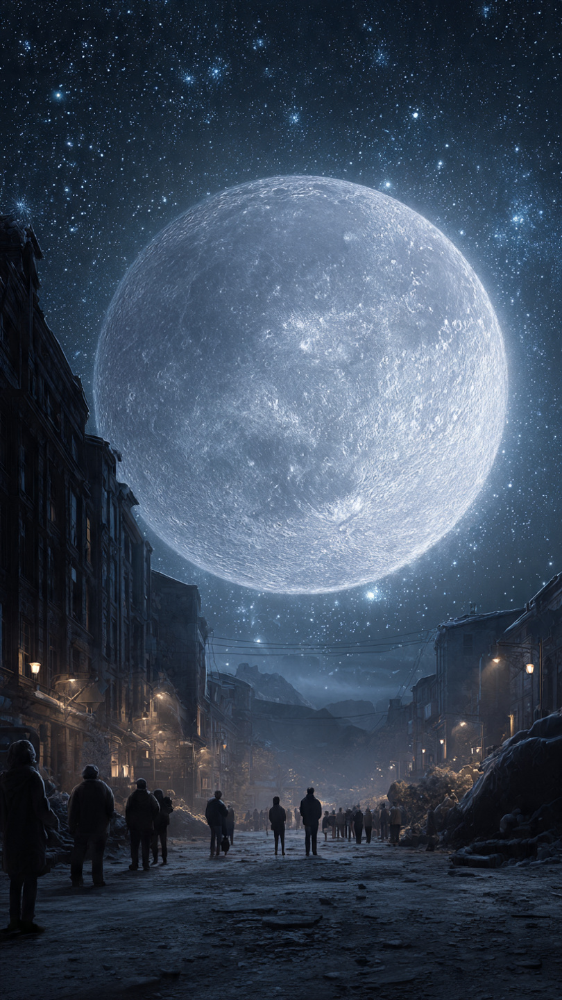
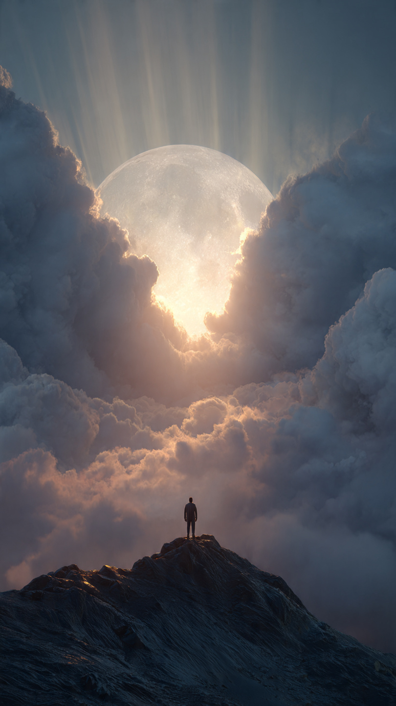

كانت ليلة هادئة، والنجوم تملأ السماء كما اعتاد الناس أن يروها كل مساء.
لكن في تمام منتصف الليل...
حدث شيء لم يسجله أي كتاب في التاريخ.
بدأ ضوء القمر يزداد لمعانًا شيئًا فشيئًا، حتى أصبح ينير السماء كلها كأنه شمس فضية.
توقف الناس في الشوارع، وخرج الجميع من منازلهم ينظرون إلى الأعلى.
ثم...
سمع العالم كله صوتًا واحدًا.
هادئًا.
عميقًا.
ودافئًا.
كان الصوت يأتي من القمر نفسه.
قال:
"أيها البشر...لقد حان وقت أن تسمعوا الحقيقة."
ساد صمت غريب في أنحاء الأرض.
حتى الرياح توقفت عن الحركة.
والبحار أصبحت هادئة بشكل لم يسبق له مثيل.
أما العلماء، فلم يجدوا أي تفسير لما يحدث.
كانت الأجهزة تسجل أن القمر ما زال في مكانه.
لكن الموجات الصوتية كانت تصدر منه فعلًا.
بدأت القنوات تنقل الحدث مباشرة.
وأصبح العالم كله ينظر إلى السماء.
في إحدى القرى الجبلية، كان يعيش شاب يُدعى عمر.
كان يعشق مراقبة النجوم منذ طفولته.
وعندما سمع صوت القمر، شعر أن الكلمات موجهة إليه.
وفجأة...
سقط أمام منزله حجر صغير مضيء.
اقترب منه بحذر.
فاكتشف أنه ليس حجرًا.
بل قطعة بلورية على شكل هلال.
وما إن لمسها...
حتى ظهر أمامه طريق من الضوء يمتد نحو قمة الجبل.
صعد عمر الطريق حتى وصل إلى مرصد قديم مهجور.
وعندما دخل، وجد تلسكوبًا ضخمًا لم يره من قبل.
كان مصنوعًا من معدن فضي غريب.
وبجانبه لوحة حجرية كتب عليها:
"لا يرى الحقيقة إلا من ينظر بقلبه."
نظر عمر عبر التلسكوب.
لكن بدلًا من رؤية القمر بعيدًا في السماء...
وجد نفسه يرى مدنًا كاملة فوق سطحه.
وغابات فضية.
وأنهارًا من الضوء.
وشخصيات تتحرك بين الجبال القمرية.
لم يكن القمر صخرة ميتة...
بل عالمًا حيًا.
وفجأة ظهر وجه عملاق داخل التلسكوب.
كان مضيئًا كالقمر نفسه.
ابتسم وقال:
"مرحبًا يا عمر."
"أنا حارس القمر."
"وقد اخترناك لأن العالم يقترب من أخطر ليلة في تاريخه."
ثم اختفى الضوء.
واهتز المرصد بعنف.
وبدأت السماء تمتلئ بخطوط سوداء تمتد نحو القمر...
وكأن شيئًا يحاول ابتلاع نوره.
📷 الصورة رقم 1

وقف عمر أمام التلسكوب العملاق، وقلبه يخفق بسرعة.
كانت الخطوط السوداء التي تلتف حول القمر تزداد عددًا كل لحظة، حتى بدا الضوء الفضي وكأنه يُسحب ببطء.
ظهر حارس القمر مرة أخرى، لكن هذه المرة خرج من داخل التلسكوب على هيئة رجل يرتدي عباءة فضية، تتلألأ عليها نجوم صغيرة تتحرك باستمرار.
قال بصوت هادئ:
"لقد بدأ الظلام القديم يستيقظ."
سأل عمر بقلق:
"أي ظلام؟"
تنهد الحارس وقال:
"قبل آلاف السنين، كانت السماء يحرسها ثلاثة أنوار..."
"الشمس..."
"والقمر..."
"ونجمٌ عظيم اختفى منذ زمن بعيد."
"وعندما اختفى ذلك النجم، بقي القمر وحده يحمي ظلام الليل."
قاد الحارس عمر إلى غرفة سرية أسفل المرصد.
كانت الجدران مغطاة برسوم للكواكب، والمجرات، وأقمار لم يرها أحد.
وفي منتصف الغرفة، كانت توجد خريطة سماوية ضخمة تدور ببطء.
لكن أحد أجزائها كان مظلمًا تمامًا.
قال الحارس:
"هناك كائن يُسمى **آكل النور**."
"لا يستطيع الظهور في وضح النهار."
"لكنه يزداد قوة كلما ضعف ضوء القمر."
"وإذا انطفأ نور القمر..."
"فلن تبقى الليالي كما تعرفها."
رفع الحارس عصاه، فانفتحت نافذة دائرية في سقف المرصد.
وسقط شعاع من ضوء القمر على البلورة الهلالية التي يحملها عمر.
وفجأة، بدأت البلورة تطير في الهواء.
ثم تحولت إلى مفتاح من الضوء.
وقال الحارس:
"هذا هو مفتاح بوابة القمر."
"ولا يستطيع استخدامها إلا من اختاره القمر بنفسه."
أدار عمر المفتاح داخل دائرة حجرية قديمة.
فانفتحت بوابة ضخمة من الضوء الفضي.
ومن خلالها ظهرت سهول واسعة، وجبال بيضاء، وبحيرات تعكس النجوم بدلًا من السماء.
لقد وصل إلى عالم القمر.
لكن الهدوء لم يدم طويلًا.
فقد بدأت الأرض القمرية تهتز.
وانشقت إحدى الجبال.
وخرج منها مخلوق عملاق، جسده من الدخان الأسود، وعيناه تشتعلان بلون أحمر داكن.
ابتسم ابتسامة مرعبة وقال:
"لقد تأخرتم..."
"بعد هذه الليلة..."
"لن يضيء القمر مرة أخرى."
ثم رفع يده نحو السماء.
وبدأ نور القمر يخفت أمام أعينهم.
📷 الصورة رقم 2

وقف عمر على سطح القمر وهو يشاهد الضوء الفضي يبهت شيئًا فشيئًا.
كانت الجبال القمرية تتشقق، والبحيرات التي تعكس النجوم بدأت تفقد بريقها.
أما الكائن الأسود، آكل النور، فكان يزداد قوة كلما خفت ضوء القمر.
نظر حارس القمر إلى عمر وقال:
"القوة وحدها لن تهزمه."
"إنه يتغذى على النور الذي يُسلب..."
"ولا يستطيع مقاومة النور الذي يُمنح."
لم يفهم عمر المعنى، لكنه شعر أن البلورة الهلالية في يده أصبحت أكثر دفئًا.
تقدم آكل النور بخطوات ثقيلة، ومد يده نحو السماء.
فانطفأت عشرات النجوم الصغيرة في الأفق.
ساد ظلام لم يعرفه العالم من قبل.
وفي الأرض، بدأ الناس ينظرون إلى السماء بخوف، بينما أخذ نور القمر يختفي تدريجيًا.
اقترب عمر من الحارس وسأله:
"كيف ننقذ القمر؟"
أجابه:
"منذ آلاف السنين، ضحّى النجم الثالث بنوره ليحمي الكون."
"ولم يختفِ..."
"بل انقسم نوره إلى ملايين القلوب التي تؤمن بالأمل."
في تلك اللحظة، رفعت البلورة الهلالية عمر في الهواء.
ورأى الأرض من بعيد.
ورأى ملايين البشر ينظرون إلى القمر.
بعضهم يدعو.
وبعضهم يتمنى.
وبعضهم يتمسك بالأمل رغم الخوف.
بدأت نقاط صغيرة من الضوء ترتفع من أنحاء العالم.
من المدن.
ومن القرى.
ومن الصحارى.
ومن فوق البحار.
واتجهت كلها نحو البلورة.
امتلأت البلورة بالنور حتى أصبحت أشبه بنجمة صغيرة.
أمسكها عمر بكلتا يديه، ورفعها نحو السماء.
فخرج منها شعاع فضي هائل اخترق الظلام، ووصل مباشرة إلى قلب القمر.
عاد الضوء ينتشر بسرعة.
واستعادت الجبال بريقها.
وعادت البحيرات تعكس النجوم من جديد.
أما آكل النور، فبدأ جسده يتلاشى.
لم يكن يهزم بالقوة...
بل بعودة النور الذي حاول سرقته.
ابتسم الحارس وقال:
"لقد فهمت السر."
"النور الحقيقي لا يولد من السماء فقط..."
"بل من القلوب التي ترفض الاستسلام."
ثم تحولت عصاه إلى غبار من النجوم.
واختفى بهدوء، بعدما سلم مهمته إلى عمر.
أغلق عمر بوابة القمر، وعاد إلى المرصد القديم.
وفي اللحظة نفسها، عاد القمر إلى لمعانه الطبيعي.
واختفت الخطوط السوداء من السماء.
أما الناس، فلم يتذكر معظمهم ما حدث.
اعتقدوا أنها كانت ظاهرة غريبة وانتهت.
لكن عمر كان يعرف الحقيقة.
ومنذ تلك الليلة، كلما اكتمل القمر، كان يلمح على سطحه وميضًا صغيرًا يشبه الهلال الذي حمله يومًا.
فيبتسم...
لأنه يعلم أن نور القمر سيظل يضيء العالم، ما دام هناك من يؤمن بالأمل، حتى في أحلك الليالي.